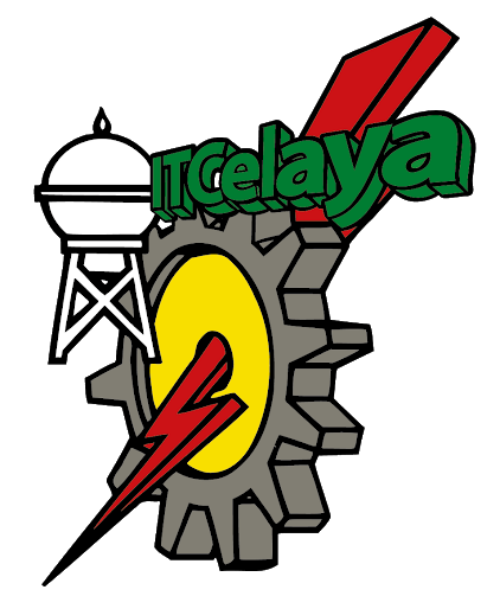
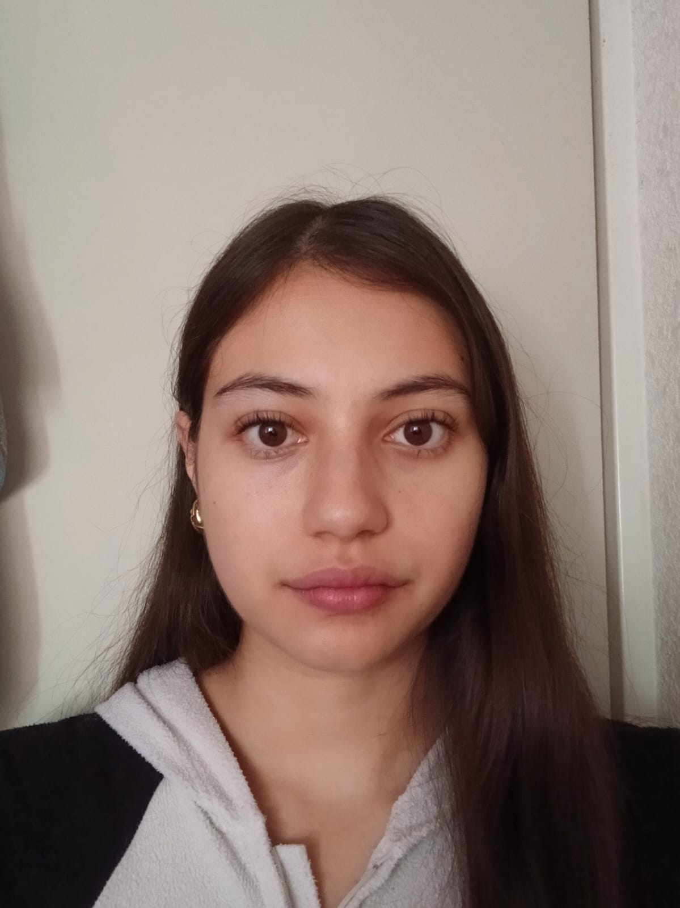
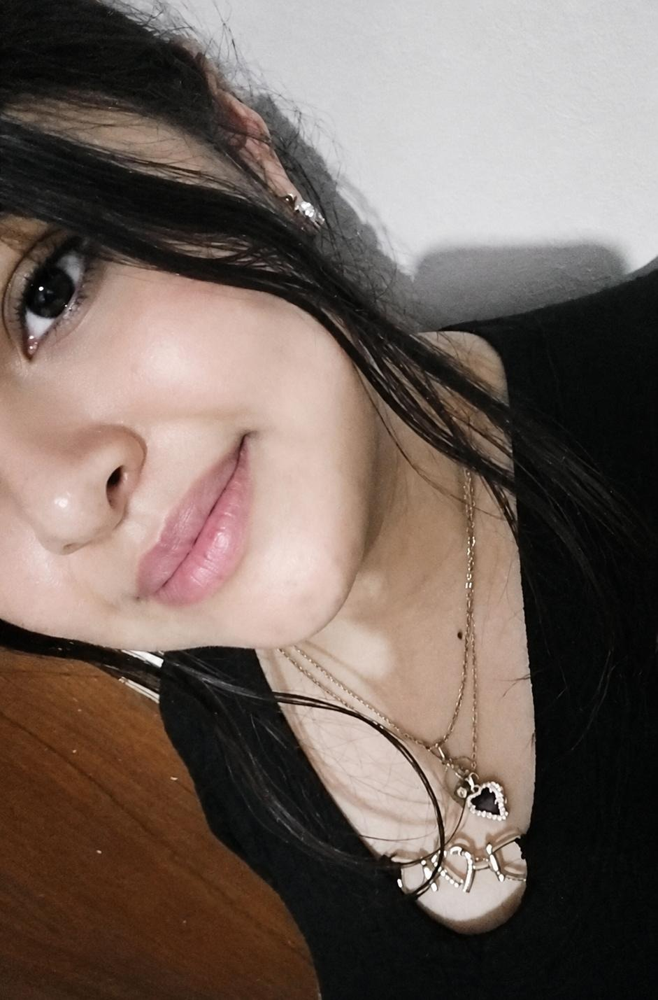

Equipo de Desarrollo
Tecnologico Nacional de México en Celaya
Lenguajes y Automatas 2
Profesor: ISC. RICARDO GONZÁLEZ GONZÁLEZ
¿Quiénes somos?
Somos un equipo conformado por cuatro estudiantes de la carrera de Ingeniería en Sistemas Computacionales, apasionados por la tecnología, la programación y el desarrollo de software. Nos motiva la creación de soluciones innovadoras que combinen creatividad, lógica y aprendizaje continuo.
Disfrutamos enfrentar nuevos retos, trabajar en equipo y transformar ideas en proyectos funcionales, buscando siempre mejorar nuestras habilidades y adquirir experiencia en distintas áreas del desarrollo tecnológico.
Dennis Adrián Quintana Lazgare
Desarrollador backend y frontend. Controlador de flujos del proyecto, correcciones en analizadores, prueba de interfaces y muestra de datos.
Victoria González Chávez

Desarrolladora backend. Responsable de la implementación de funcionalidades relacionadas con la integración de datos y el análisis léxico del compilador.

Jaqueline Jinez Matehuala
Encargada de desarrollo de funcionalidades dentro del análisis sintáctico y traductor MySQL
Gabriel Josafat Ramirez Reyes
Responsable de pruebas y control de calidad, así como del maquetado de la interfaz gráfica y del desarrollo de funcionalidades relacionadas con el análisis léxico.